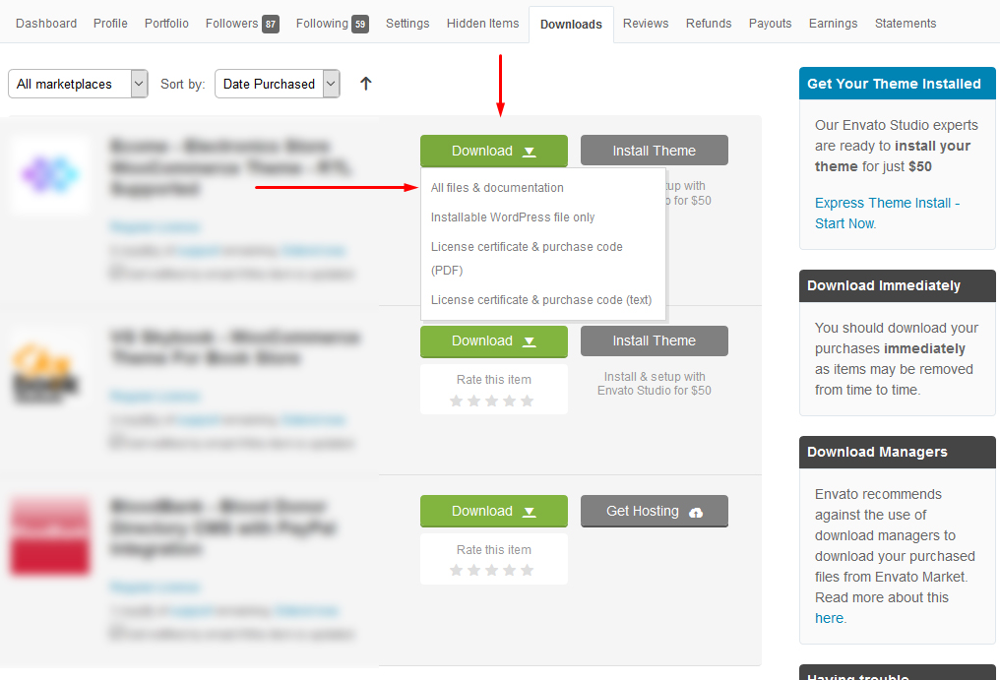
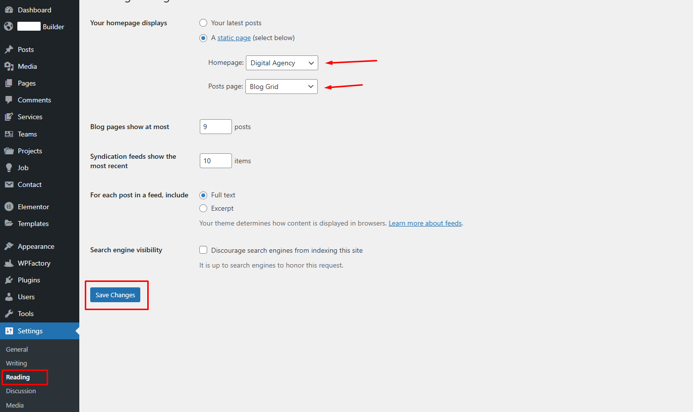

Welcome to Agroland - Agricultural WordPress Theme Documentation.
- Item Name : Agroland - Agricultural WordPress Theme
- Created : 02 June 2025
- Item Version : v 1.0.1
- Author : mirrortheme
- Support Ticket : Theme Support
- Online Documentation : Theme Documentation
Agroland is designed for farm websites, agricultural suppliers, and sustainable agribusinesses. It includes templates for crop listings, equipment showcases, and sections that communicate environmental practices.
Thank you for purchasing this template and for being our customer. We appreciate your trust in our product and aim to exceed your expectations. You receive free lifetime updates for this product and direct support from the author.
This documentation is to help you regarding each step of customization. Please go through the documentation carefully to understand how this template is made and how to edit this properly.
If you are unable to find your answer here in our documentation, we encourage you to knock our Support. No matter the problem little or big. We are always ready to help you.
Author, mirrortheme
Theme Requirements
To use Agroland, make sure your hosting provider is running the following software:
- WordPress 5.0 or higher.
- PHP 8.0 or greater. WordPress officially suggests to use PHP 8.1
Recommended PHP Limits
Many issues that you may run into such as: white screen, demo content fails when importing, empty page content and other similar issues are all related to low PHP configuration limits. The solution is to increase the PHP limits. You can do this on your own, or contact your web host and ask them to increase those limits to a minimum as follows:
max_execution_time 1000memory_limit 1000Mpost_max_size 64Mupload_max_filesize 32Mmax_input_time = 1000max_input_vars = 3000
Also consider upgrading your PHP version to the latest version, the newer the better.
WordPress Information
To install this theme you must have a working version of WordPress already installed. If you need help installing WordPress, follow the instructions in WordPress Codex or you can watch the. Below are ll the useful links for WordPress information.
- WordPress Codex – general info about WordPress and how to install on your server
- First Steps With WordPress – general information that covers a wide variety of topics
- FAQ New To WordPress – the most popular FAQ’s regarding WordPress
What's included
When you purchase our theme from Themeforest, you need to download the Agroland files from your Themeforest account. Navigate to your downloads tab on Themeforest and find Agroland. Click the download button to see the two options. The Main Files contain everything, the Installable WordPress Theme is just the installable WordPress theme file. Below is a full list of everything that is included when you download the main files, along with a brief description of each item.
-
Installable WordPress file only. You can upload this file when you install the theme.
-
All files and documentation (full zip folder). You will need to extract and locate the installable WordPress file to upload when you install the theme.
Theme Installation
It’s easy to install Agroland. Just follow these steps, they won’t take much of your time.
- Download the theme zip file from your Envato account from ThemeForest.
- **All files & documentation **(full zip folder). You will need to extract and locate the installable WordPress file to upload when installing theme 
- Log in to your WordPress Dashboard (Ex: http://yourwebsite.com/wp-admin). (Required fresh WordPress)
- Navigate to Appearance > Themes.
- Click on Add New and then Click on Upload Theme .
- Click Add New, then click Upload Theme > Choose File
- Navigate to the .zip file on your computer, then click Install Now
- When the installation complete, click Activate. You will be redirected to Themes page with Agroland activated.
- Done.
Install theme via FTP
To manually upload your new WordPress theme, login with your credentials to your website and locate the wp-content folder in your WordPress install files. Upload the un-zipped 'Agroland' folder into the: wp-content/themes folder.
Once uploaded, activate the theme by heading to the “Themes” menu in the WordPress Dashboard. Locate the Agroland Theme and hit “Activate”.
The theme files will be stored on your server in the
wp-content/themes/ location.
Note: When uploading your theme with the installer, please ensure you are uploading the theme .zip file, not the entire package you downloaded. In this case, you will be uploading quanto.zip
Plugin Installation
After activating Agroland, you will see this notice:
Click Begin installing plugins. You will be navigated to Install Required Plugins page.
Simply check all of them (or all of required plugins and some recommended plugins you like) and from the drop down select Install, then hit Apply.
When finishing, it should look like this:
Then Active all Plugins:
Demo Installation
Our demo data import lets you have the whole data package in minutes, delivering all kinds of essential things quickly and simply. All you need to do is to navigate to Appearance >Import. Hit Import this demo.

If you need those plugins then you can Install otherwise not, just click on Continue & Import
Have a cup of coffee. The process is within minutes.
When finishing, it should look like this:
Important: Things to do now:
Go to Setting > Reading > Front page displays and choose the page you like to be your front page then hit Save changes.
Go to Setting > Permalinks > set it Post name and then Save changes.
Preloader
Here you can change the Preloader Image, On & Off Preloader just one click.
Go to the Agroland Options > Preloader here you can see the switcher to on & off preloader and also preloader image option then Save Changes .
Theme Color
Here you can change the Theme Color, Body Color, Heading Color just one click. For example, when you change the Primary Color the full theme will be changed and when you change the Heading Color the all heading color will be changed.
Go to the Agroland Options > General Settings and change the color as you want and then Save Changes .
Theme Logo
Logo Change
There are two options of logo a Dark Logo and a White Logo. Here you can change the Logo as you want.
Go to the Agroland Options > Logo and change the logo as you want and then Save Changes .
Retina Logos
To make your logos look crisp on Retina devices, simply upload a Retina logo to the corresponding upload fields.
Retina versions are twice as large as the original ones. For example, if your logo is 100px x 50px, the Retina version must be 200px x 100px.
Logo Size
Here you can change the Desktop and Mobile Logo Size as you want.
Go to the Agroland Options > Logo and change the logo size as you want and then Save Changes .
Blog
Here you can customize blog page.
Navigate to Agroland Options > Blog then customize as you want. There is more options below.
Blog Single
Here you can customize Blog Single Page.
Navigate to Agroland Options > Single Blog then customize as you want. There is more options below.
Blog Meta
Here you can customize Blog Meta.
Navigate to Agroland Options > Meta Data then customize as you want.
Customization
Favicon
Go to the Customize > Site Identity then you can change the Favicon.
Agricultural Features
Use crop listings to present available produce with images, descriptions, and pricing.
The equipment showcase widget displays machinery or tools with photographs and specifications.
For sustainability messaging, create sections that describe environmentally conscious practices and certifications.
Page Options
On each page you'll see a Template Settings metabox, located below the page content editor. This metabox includes various options to control the header style , footer visibility and Logo Setting on each page.
Create a New Page
Step 1: Navigate to Pages in your admin sidebar and click Add New option.
Step 2: Enter a new name for your page, then find the Page Attributes box on right side to set your Parent or Template page.
Use Elementor Page Builder to Build Page
Step 1: Choose Edit With Elementor to edit your page.
Step 2: Choose Add Element to start adding our premade elements to your new page.
How to Change Page Title
Step 1: Go to Pages > All Pages. Then point at the page you want to edit. You will see the Quick Edit option.
Step 2: Edit the title as you want. Delete the current slug. Then hit Update. It will automatically generate new slug for your page.
You can also edit some other options such as parent, template, status... If you want to edit more options, hit Edit instead of Quick Edit.
Logo Image
There’re different logo locations in Agroland. All of them can be configured in
Agroland Builder →Header BuilderEdit With Elementor
any of header and change the logo
Retina Logos
To make your logos look crisp on Retina devices, simply upload a Retina logo to the corresponding upload fields.
Retina versions are twice as large as the original ones. For example, if your logo is 100px x 50px, the Retina version must be 200px x 100px.
Header
Add new Header
At first you have to go : Agroland Builder > Header Builder > Add New Header
Then Edit With Elementor any header.
Navigate to Pages -> All pages there you can see all of the pages which you include.
fig-2 : After click Edit With Elementor you can see this below options
Footer
For footer You have to go to Footer Builder and Edit With Elementor.
Here you can edit the footer
Like header you can select any footer from any page, Edit With Elementorthe page, you can see this below options

Blog
Here you can edit the blog page as you want.
Go to Agroland Builder to Archive Builder here you can add new archive and Edit With Elementor archive.
And then you have to select the archive page as blog archive, categoy archive, tag archive etc.
Contact Form Setup
Overflow comes with integrated support for the Contact Form 7 plugin:
Contact Form for Contact Page
Copy the shortcode Paste it everywhere then you will get a contact form.
And you can edit the form from here and then Save.
How to Create a New Post
Step 1: Navigate to Posts > Add New in your WordPress admin sidebar.
Step 2: Create a title, and insert your post content in the editing field.
Step 3: For a video/audio post, just simply paste the video/audio URL into the Embed Code field.
Step 4: Add Categories from the right side. Categories is meta information you create for the post. Each category is a meta link that your viewer can click to view similar type of posts. To assign it to the post, check the box next to the Category name. You can also access and edit Categories from the Post sidebar item in your WordPress admin sidebar.
Step 5: Add Tags from the right side. Tags is meta information you create for the post. Each tag is a link that your viewer can click to view similar type of posts. Type the name of the tag in the field, separate multiple tags with commas. You can also access and edit Tags from the Post sidebar item in your WordPress admin sidebar.
Step 6: For a single image, click the first Featured Image Box, select an image and click the Set Featured Image button.
Step 7: You can also customize Page Title & Sidebar Options in Settings.
Step 8: Once you are finished, click Publish to save the post.
Here is the screenshot that shows the various areas of the blog post page:
How to Create a Category
Step 1: Post >> Categories
Step 2: Name the category and fill to other section below.
Step 3: Hit Add New Category. Your new Category will aprear in the table of all category immediately.

Similar to Category, you can create a new Tag in the same way.
How to Add Widget in Sidebar
Step 1: Appearance >> Widgets. You can see all of the Sidebar here.
Step 2:Choose the Widgets you want and drag it to the Sidebar you want or click on it to choose the Sidebar.
In the case you want to delete its settings, drag it back.
Elementor About Section
About Edit With Elementor
Elementor Services Widget
Services Edit With Elementor

Elementor Team Widget
Team Edit With Elementor
Elementor Portfolio Widget
Portfolio Edit With Elementor
You can edit Portfolio Custom Post in here. And also add new Portfolio.
Elementor Testimonial Widget
Testimonial Edit With Elementor
Elementor Blog Widget
Blog Edit With Elementor
Elementor Contact Widget
Contact Edit With Elementor
Free Support System
All of mirrortheme items
come with 6 months of included support and free lifetime updates for your Theme.
Once the 6 months of included support is up, you have the opportunity to extend support
coverage up to 6 or 12 months further.
If you choose to not extend your support, you will still be able to submit bug reports via
email or item comments and still have access to our online documentation knowledge base and video tutorials.
Our Support Mail
All of our items come with free support, and we have a dedicated mail: masumsakib396@gmail.com to handle your requests. Support is limited to questions regarding the theme’s features or problems with the theme. We are not able to provide support for code customizations or third-party plugins. If you need help with anything other than minor customizations of your theme then you should enlist the help of a developer.
Item Support Includes
- Answering questions about how to use the item
- Answering technical questions about the item
- Help with defects in the item
- Item updates to ensure ongoing compatibility and to resolve security vulnerabilities
Not Included in Item Support
- Theme customization and requests that require or involve custom coding
- Installation of the item
- Hosting, server environment, or software
- Support for compatibility with 3rd party plug-ins
- Support for out-dated or modified themes
For more information on Item Support Policy please refer to the original document..
Thank you for using this theme.
Thank you again for purchasing this theme. If you have any questions about the theme, please contact our Support. For general questions about ThemeForest themes, visit the forums and ask in the "Item Discussion" section. We are always ready to help you.